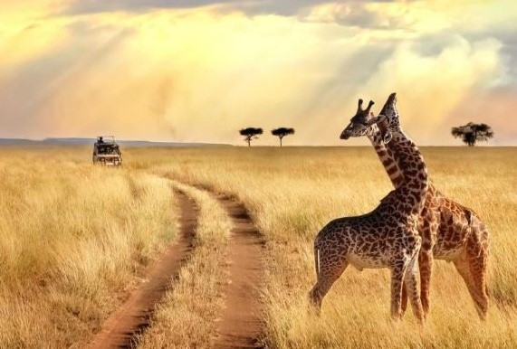
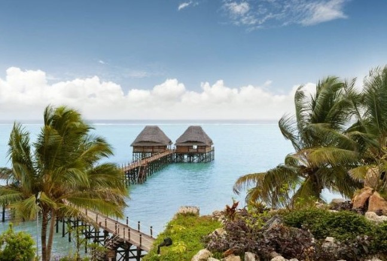
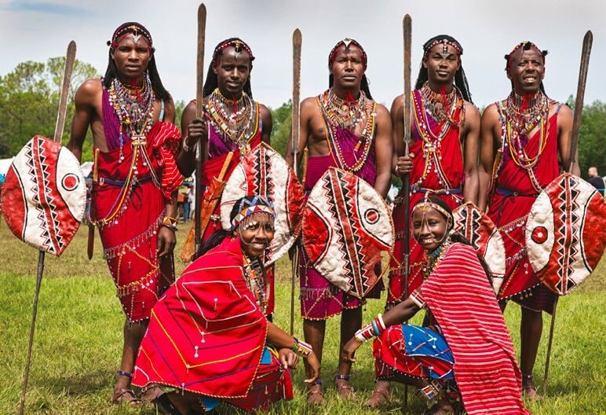

El continente de los atardeceres y la auténtica vida salvaje es una leyenda convertida en realidad. Paisajes inexplicables que solo podrían existir en la imaginación, una fauna sorprendente y un espíritu guerrero, de superación y esperanza, componen la melodía de una melodía que es vida, naturaleza y sorpresa.

Gastronomía

Cultura

Experiencia